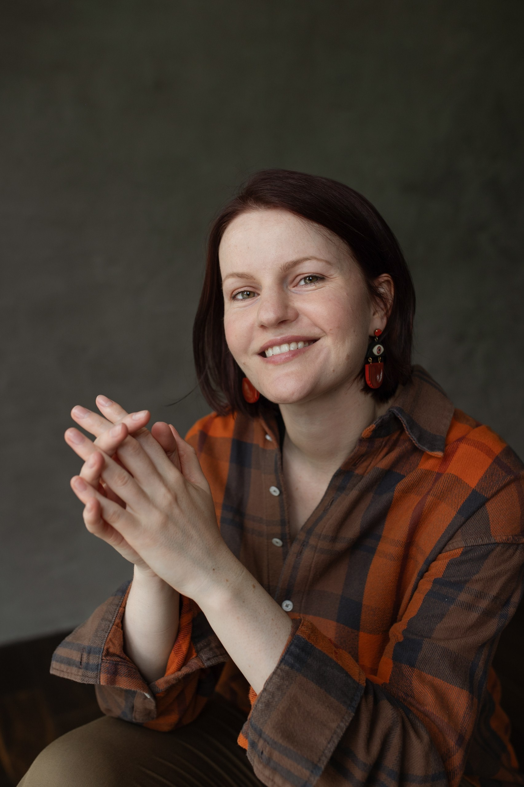
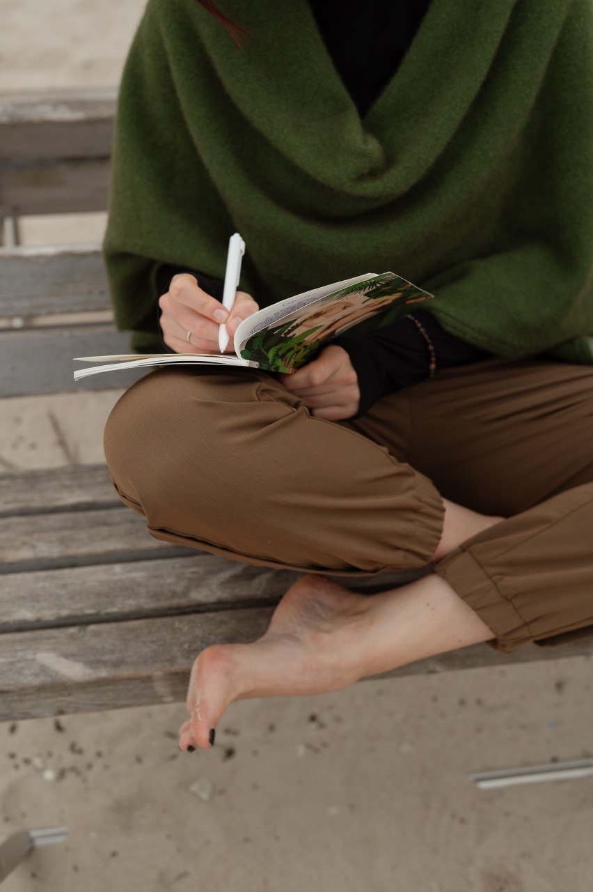
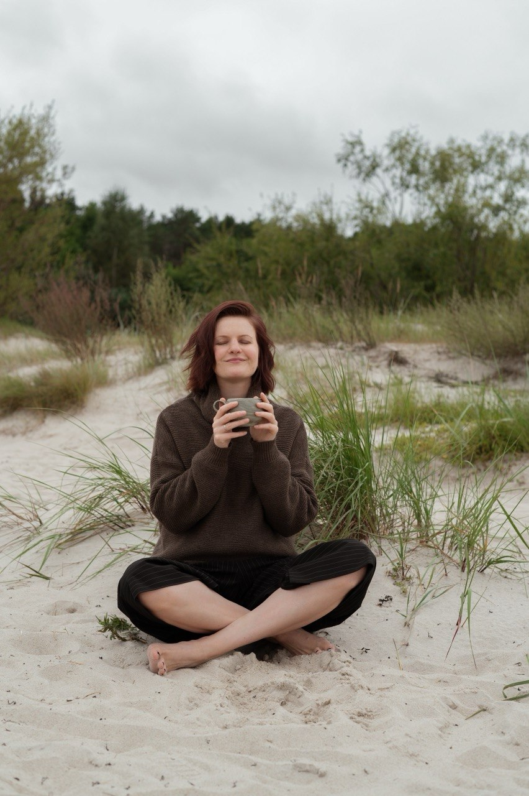
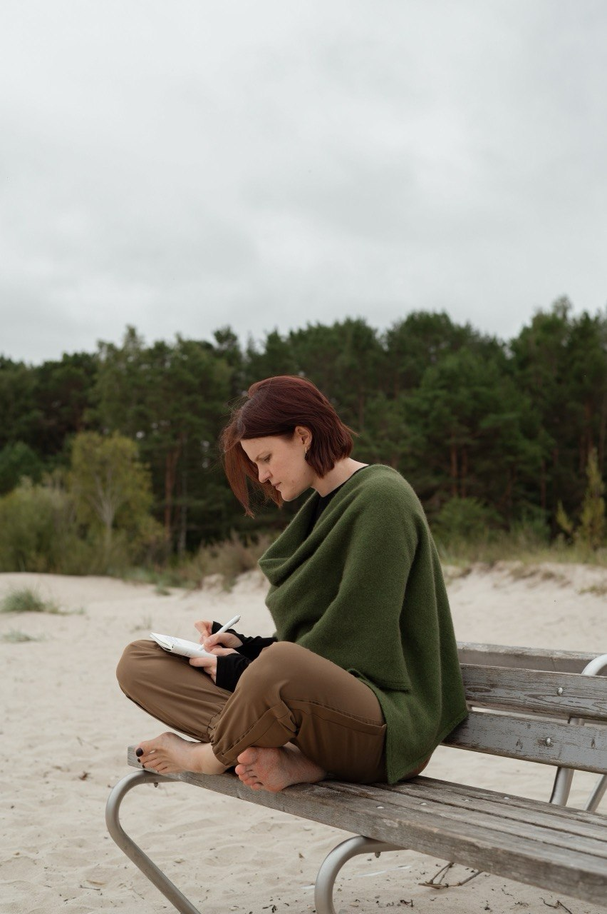
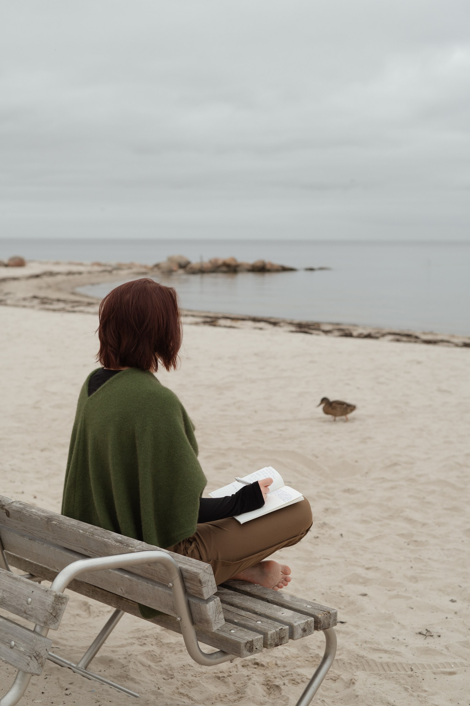
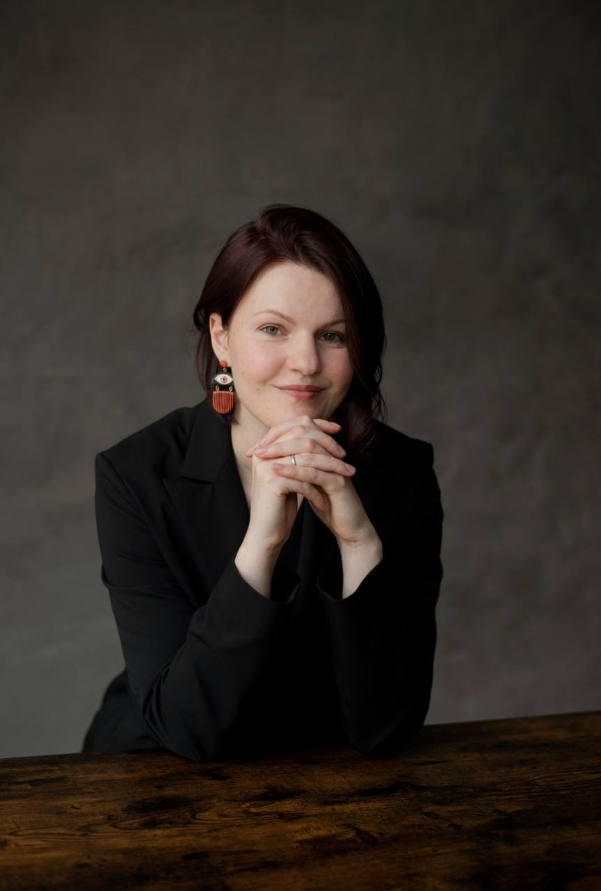

Чтобы решение было вашим
Для тех, кто привык разбираться сам, но упёрся в вопрос, который сам не решается.
ICTA коуч. 10 лет в IT: бизнес-аналитик, BA менеджер, ментор. Провожу ассессменты и внешние интервью.

- Бесплатная 30-минутная встреча: разобрать запрос и понять, ваш ли это формат
- Пакет из 4 или 8 сессий, раз в одну-две недели, онлайн
- К концу: решение, которое вы принимаете сами и которому доверяете
/01 · Узнаёте себя?
Примеры запросов, с которыми я сейчас работаю
- Обдумываете изменения второй год, и всё ещё на месте
- Взвешиваете варианты месяцами
- Не понимаете, нужен ли вам менеджмент
- Ждёте, что ситуация прояснится сама
- Теряетесь в шуме про AI и не понимаете, во что вкладывать своё время
- Знаете, чего не хотите, но не знаете, чего хотите
- Формально всё в порядке, но энергии на эту работу больше нет
- Соглашаетесь на задачи, которые не выбирали
- Хотите перемен, но не понимаете, куда расти и каких навыков не хватает

Запрос не обязан быть карьерным. Важнее, что он давно не двигается.
/02 · Как проходит работа
- Записываетесь на бесплатную 30-минутную ознакомительную встречу
- Если договариваемся работать, определяем размер пакета (4 или 8 сессий), стоимость и периодичность: раз в неделю или раз в две. Сессия длится 50 минут, онлайн; я в часовом поясе Риги.
- Оговариваем правила работы: отмена и перенос сессий, домашние задания, конфиденциальность, записи, этический кодекс, ответственность за результат, возврат оплаты и другие аспекты работы
- В начале каждой сессии актуализируем запрос (он может измениться в процессе работы, и это нормально); в конце подводим итоги и определяем план активностей до следующей сессии
- А в конце всегда есть много поводов похвалить себя за то, что уделили себе время и работали над тем, чтобы сдвинуться с места!
/03 · Куда вы придёте
Что вы почувствуете:
- Спокойствие вместо тревоги
- Контроль вместо ощущения, что вас куда-то несёт
- Доверие собственному суждению

Что вы сделаете:
- Осознанно примете решение в важном для вас вопросе
- Протестируете свои гипотезы на практике
/04 · Частые сомнения
«У меня вроде всё нормально, разве это повод?»
Достаточно того, что вопрос не двигается. Не обязательно ждать, пока станет тяжелее.
«Почему именно вам доверить такой важный вопрос?»
Со мной не придётся объяснять контекст с нуля. 10 лет в IT, сейчас Business Analysis Manager: я проводила ассессменты и внешние интервью, то есть видела планку Senior+ с обеих сторон стола. Я знаю, как выглядит рост в среде, где «от меня ничего не зависит», и что в ней всё-таки можно менять.
При этом я не карьерный консультант и не буду говорить, какой путь выбрать. Многие из этих запросов я проходила или прохожу сама, но мой ответ не обязан быть вашим. Сертифицирована по стандартам коучинговой ассоциации ICTA, регулярно хожу на супервизии.
«Я плачу за ясность и план, но без гарантии повышения или новой роли, стоит ли оно того?»
Конкретный внешний результат зависит от ваших действий и внешних условий. Но вы получаете реалистичный план и понимание своих ресурсов и ограничений: то, с чего вообще можно начать двигаться.
/05 · Почему не привычные способы
Иногда полезен взгляд коллеги, которая те же процессы видела изнутри. Когда это уместно, я могу сказать что-то вроде «сейчас я на минуту выйду из роли коуча и поделюсь наблюдением: берите, если откликается», затем вернуться в коучинговую позицию. Никаких непрошенных советов :)



/06 · Кто ведёт сессии
Я Мария Волкова, сейчас живу в Риге, сама из Минска, ещё жила в Варшаве и Москве.
10 лет в IT: бизнес-аналитик, BA-менеджер, ресурсный менеджер. Провожу ассессменты и внешние интервью, поэтому хорошо представляю, как выглядит планка Senior+ изнутри.
В 2025 сертифицировалась как трансформационный коуч по стандарту ICTA (школа «Вектор Роста»), там же прошла курс «Эннеаграмма в коучинге». Регулярно хожу на супервизии.
Учусь в Балтийском Институте Психотерапии на интегративном подходе. Психотерапевтом быть не планирую, но это обучение помогает замечать больше сигналов: не только то, что человек говорит, но и то, как он это говорит. И вовремя увидеть случаи, когда нужен не коуч, а психотерапевт.